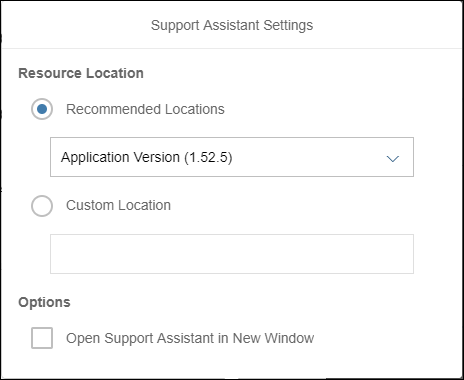

Running the Support Assistant on an Older SAPUI5 Version
Running the Support Assistant on an Older SAPUI5 Version
The minimum SAPUI5 version in which the Support Assistant is available is 1.44.17.
- Open the Technical Information Dialog using the shortcut Ctrl Shift Alt / Option P .
-
Choose the settings button for the Support Assistant (
 ).
).
-
Select a predefined version from the dropdown, or select Custom
Location to paste a custom URL in the input field.

When you choose a custom location, keep in mind that the URL should match the protocol of the application. For example, if the application is HTTP, the location should also be HTTP. If it is HTTPS, the location should be HTTPS. The URL should also end in
sap/ui/support/.- Under Options you can select if the Support
Assistant should be opened in a separate window.
Additional window popups may be blocked by your browser settings.
- Under Options you can select if the Support
Assistant should be opened in a separate window.
-
Select Activate Support Assistant.
Your application will reload and the Support Assistant will start.
In the following diagram, you can see how the different SAPUI5 versions interact with the Support Assistant.

You are now able to run the Support Assistant on the version that you selected.
Rules with a higher minVersion than the one currently loaded are not
checked.
These settings are stored in your local storage (if selected) and are reused on consecutive runs.